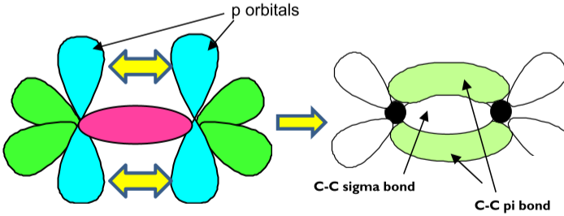

Alkenes
Alkenes contain a carbon–carbon double bond, and that one bond changes everything. It makes alkenes far more reactive than alkanes, it stops the molecule twisting (which creates a new kind of isomer), and it lets small molecules join into the long chains of addition polymers. This topic explains all three, starting from what a double bond actually is.
Alkenes and their names
Alkenes are unsaturated hydrocarbons: they contain at least one C=C double bond. With one double bond and no rings, their general formula is CnH2n. Cycloalkenes, such as cyclohexene, C6H10, have a ring as well as a double bond, so they have two fewer hydrogens: CnH2n−2.
The two carbons of the C=C and the four atoms joined to them all lie in one plane, with bond angles of about 120°. Three regions of electron density around each carbon (two single bonds and the double bond) repel each other as far apart as possible.
| Name | Structural formula | Note |
|---|---|---|
| ethene | CH2=CH2 | the simplest alkene |
| propene | CH2=CHCH3 | no number needed: the C=C can only start at carbon 1 |
| but-1-ene | CH2=CHCH2CH3 | position isomers: the number is the lower-numbered carbon of the C=C |
| but-2-ene | CH3CH=CHCH3 | |
| 2-methylpropene | (CH3)2C=CH2 | a chain isomer of the butenes |
| buta-1,3-diene | CH2=CHCH=CH2 | two double bonds: a diene, with an extra "a" in the stem |
The double bond: σ and π bonds
A covalent bond forms where two atomic orbitals overlap and share a pair of electrons. Orbitals can overlap in two different ways, and a double bond uses both.
- σ bond (sigma): the orbitals overlap end-on, directly along the line between the two nuclei. The shared electrons sit between the nuclei, where they attract both strongly. Every single bond is a σ bond.
- π bond (pi): two p orbitals, one on each carbon, overlap sideways. The shared electron density forms two regions, one above and one below the plane of the molecule, with none on the line between the nuclei.
A C=C double bond is one σ bond plus one π bond.

Sideways overlap is less effective than end-on overlap, and the π electrons are further from the two nuclei, so the π bond is weaker than the σ bond. You can see this in the mean bond enthalpies: C=C is 612 kJ mol−1 but C–C is 347 kJ mol−1, so the π bond adds only about 265 kJ mol−1. Two big consequences follow.
- Reactivity. The π electrons are exposed above and below the molecule, making a region of high electron density that attracts electrophiles (electron-pair acceptors). The π bond is also relatively easy to break. So alkenes undergo addition reactions: the π bond breaks and two new σ bonds form.
- Restricted rotation. The two p orbitals only overlap when they are parallel. Twisting one end of the molecule would pull them out of line and break the π bond, so there is no free rotation about a C=C bond at room temperature. (Rotation about a C–C single bond is free, because end-on overlap does not depend on the angle.)
To count σ and π bonds, remember: every single bond is one σ bond, and every double bond is one σ plus one π. Propene, CH2=CHCH3, has six C–H bonds, one C–C and one C=C, so it has 8 σ bonds and 1 π bond.
E/Z stereoisomerism
Stereoisomers have the same structural formula but a different arrangement of their atoms in space. Alkenes can show a kind called E/Z isomerism (also called geometric isomerism). It needs two things together:
- restricted rotation about the C=C double bond, so the arrangement is locked in; and
- two different groups on each carbon of the double bond. If either carbon carries two identical groups, swapping them makes no difference, so there are no E/Z isomers.
Naming E and Z isomers
To decide which isomer is which, give the two groups on each carbon a priority using the Cahn–Ingold–Prelog (CIP) rule: the group whose atom bonded directly to the C=C carbon has the higher atomic number has the higher priority. Then compare the two higher-priority groups:
- Z isomer (from the German zusammen, together): the higher-priority groups are on the same side of the double bond.
- E isomer (from entgegen, opposite): the higher-priority groups are on opposite sides.
Look at the left-hand carbon of the C=C. It carries Br and CH3. The atoms bonded directly to the carbon are Br (atomic number 35) and C (atomic number 6). Br has priority.
Look at the right-hand carbon. It carries CH3 and H: C (6) beats H (1), so CH3 has priority.
Both priority groups, Br and the right-hand CH3, are above the double bond: same side, so this is Z-2-bromobut-2-ene.
Notice that the two CH3 groups are on opposite sides, so anyone using cis/trans by comparing the methyl groups would call it "trans". That clash is why the E/Z system, which works for any groups, is the one to use.
Cis–trans naming is a special case of E/Z that works when the two carbons carry a matching pair of groups, as in but-2-ene or 1,2-dichloroethene (CHCl=CHCl). Cis means the matching groups are on the same side; trans means opposite. For these molecules Z is the same as cis and E is the same as trans, because the matching groups (CH3, or Cl) are also the higher-priority ones.
E/Z isomers are different compounds with different physical properties. Z-but-2-ene boils at about 4 °C and E-but-2-ene at about 1 °C. Their chemical reactions are very similar, because they have the same functional group.
But-1-ene, CH2=CHCH2CH3, has no E/Z isomers: carbon 1 carries two hydrogen atoms. It is, however, a structural isomer of but-2-ene. Always check both carbons of the C=C before you draw E/Z isomers.
Addition reactions of alkenes
In an addition reaction two molecules join to make one product. For an alkene, the π bond breaks and each carbon of the old C=C gains a new σ bond, so the product is saturated.
| Reagent | Conditions | Product | Type of reaction |
|---|---|---|---|
| hydrogen, H2 | nickel catalyst, about 150 °C | alkane | addition (hydrogenation); reduction |
| halogen, e.g. Br2 | room temperature; bromine in an organic solvent or as bromine water | dihalogenoalkane | electrophilic addition |
| hydrogen halide, e.g. HBr | room temperature | halogenoalkane | electrophilic addition |
| steam, H2O(g) | phosphoric acid catalyst, about 300 °C and 60–70 atm | alcohol | addition (hydration) |
| potassium manganate(VII), acidified | room temperature | diol | oxidation |
The products are 1,2-dibromoethane, 2-bromopropane (the main product, explained below), ethanol and ethane-1,2-diol. In the last equation [O] stands for oxygen supplied by the oxidising agent.
- Hydrogenation is used to turn liquid vegetable oils (which contain C=C bonds) into solid spreads such as margarine.
- Hydration of ethene is how most industrial ethanol is made. It is reversible, so the ethene that does not react is recycled. Every atom of the reactants ends up in the product, so the atom economy is 100%. The high pressure it needs makes it unsuitable for the school laboratory.
Electrophilic addition: the mechanism
An electrophile is an electron-pair acceptor. It is attracted to the high electron density of the π bond. The mechanism always has the same two steps: the electrophile accepts a pair of electrons from the π bond, which leaves a positively charged carbocation (a carbon with only three bonds and a positive charge); then a negative ion uses a lone pair to bond to that carbon.
Bromine and ethene
Bromine is non-polar, so how can it be an electrophile? As a Br2 molecule approaches the alkene, the π electrons repel the electrons of the Br–Br bond towards the far bromine. This induces a dipole: the nearer bromine becomes δ+ and can accept a pair of electrons.
The π bond induces a dipole in Br2: Brδ+–Brδ−.
A curly arrow from the π bond to Brδ+ shows the π electron pair forming a new C–Br bond. At the same time, a curly arrow from the Br–Br bond to Brδ− shows that bond breaking heterolytically: the far bromine leaves as a bromide ion, Br−.
That leaves a carbocation intermediate: the other carbon has lost its share of the π electrons and carries a positive charge.
A curly arrow from a lone pair on Br− to C+ shows the bromide ion forming the second C–Br bond. The product is 1,2-dibromoethane, CH2BrCH2Br.
Exam answers need: the δ+ and δ− on Br2, the arrow from the π bond (the middle of the C=C), the arrow from the Br–Br bond, the structure of the carbocation with its + charge, a lone pair on Br− with the final arrow starting from it.
Hydrogen bromide and alkenes
HBr is already polar, because bromine is more electronegative than hydrogen: Hδ+–Brδ−. The mechanism is the same: the π bond attacks Hδ+, the H–Br bond breaks heterolytically, and Br− attacks the carbocation. With ethene the product is bromoethane. Hydrogen chloride reacts in just the same way.
Unsymmetrical alkenes: major and minor products
When HBr adds to propene, the hydrogen can go to either carbon of the C=C, so there are two possible carbocations and two possible products:
- H adds to the end carbon (CH2): the positive charge is on the middle carbon, which is bonded to two other carbons. This is a secondary carbocation, and it leads to 2-bromopropane.
- H adds to the middle carbon: the positive charge is on the end carbon, bonded to only one other carbon. This is a primary carbocation, and it leads to 1-bromopropane.
Carbocation stability: tertiary > secondary > primary
Alkyl groups (CH3, C2H5 and so on) are electron-releasing: they push electron density towards the positive carbon, which spreads out (reduces) the positive charge and stabilises the ion. The more alkyl groups on C+, the more stable the carbocation. The more stable carbocation forms more easily and faster, so the major product is the one formed via the more stable carbocation.
So propene and HBr give mainly 2-bromopropane, with a little 1-bromopropane. This pattern is sometimes summed up as "the hydrogen goes to the carbon that already has more hydrogens", but in the exam you must explain it in terms of carbocation stability.
For an "explain why there is a major and a minor product" question: (1) draw or name both possible carbocations; (2) classify them as primary, secondary or tertiary; (3) state which is more stable, because it has more electron-releasing alkyl groups that reduce the positive charge; (4) say the major product forms via the more stable carbocation. If both carbocations are of the same type, expect roughly equal amounts of the two products.
Mixed halogens. A molecule such as BrCl is polar because chlorine is more electronegative: Brδ+–Clδ−. So Br is the electrophile and adds first, and Cl− attacks the carbocation. With propene, Br goes to the end carbon (giving the secondary carbocation) and the main product is 1-bromo-2-chloropropane.
Applying the mechanism: steam and an acid catalyst
Hydration follows the same pattern with H+ (from the phosphoric acid) as the electrophile and a water molecule as the species that attacks the carbocation, using a lone pair on oxygen. The H+ is given back at the end, which is why the acid is a catalyst. With propene, the secondary carbocation is favoured, so the main product is propan-2-ol.
The π bond attacks H+. H adds to the end carbon, giving the more stable secondary carbocation, CH3C+HCH3.
A lone pair on the oxygen of a water molecule forms a bond to C+. The oxygen now has three bonds and carries the positive charge.
An O–H bond breaks, with both electrons going to the oxygen, and H+ is released. The product is propan-2-ol and the catalyst is regenerated.
\[ \mathrm{CH_2{=}CHCH_3 + H_2O \xrightarrow{H^+} CH_3CH(OH)CH_3} \]Testing for a C=C double bond
| Test | Result with an alkene | Result with an alkane |
|---|---|---|
| Shake with bromine water | orange (or yellow-brown) → colourless | stays orange |
| Shake with acidified potassium manganate(VII) | purple → colourless | stays purple |
Both colours disappear because the coloured reagent is used up by addition across the C=C (bromine) or by oxidation of the C=C to a diol (manganate(VII)). Alkanes are saturated, so neither reaction can happen; at room temperature in the dark, bromine water does not react with them at all. In bromine water the water molecules, present in huge excess, compete with Br− to attack the carbocation, so the main product with ethene is actually 2-bromoethanol:
\[ \mathrm{CH_2{=}CH_2 + Br_2 + H_2O \rightarrow CH_2BrCH_2OH + HBr} \]Say "decolourised" or "turns colourless". "Goes clear" is wrong: a coloured solution can be clear (transparent). And remember the test needs no UV light: in UV light, bromine would slowly react with an alkane too, by free-radical substitution.
Addition polymers
Under the right conditions (high pressure, or a catalyst) alkene molecules join together into very long chains. The π bond of each monomer opens up and forms σ bonds to its neighbours, so thousands of monomers become one polymer molecule. Nothing else is produced, so this is addition polymerisation.
- Monomer: the small molecule (here an alkene) that joins up to form the polymer.
- Repeat unit: the smallest section of the chain that, repeated over and over, gives the whole polymer. For an addition polymer it is two carbon atoms long: the two carbons of the old C=C, now joined by a single bond.
To draw the repeat unit, draw the monomer with its four groups around the C=C, change the double bond to a single bond, keep the four groups exactly where they were, and add bonds sticking out of each end through square brackets. The n goes outside the bracket, and in an equation in front of the monomer as well. The polymer is named by putting the monomer's name in brackets after "poly".
To go backwards, from a polymer to its monomer, pick out a two-carbon repeat unit from the backbone, remove the end bonds and put the double bond back between the two carbons. The Mr of a repeat unit is the same as that of the monomer, so the number of repeat units in a chain is Mr(polymer) ÷ Mr(monomer). A poly(propene) chain of Mr 210 000 contains 210 000 ÷ 42.0 = 5000 repeat units.
Poly(alkenes) are saturated, with only strong, non-polar C–C and C–H bonds, so they are unreactive, just like alkanes. That makes them useful (they do not corrode or rot, and they are safe to store food in) but also creates a problem: they are not biodegradable and can last for hundreds of years.
Dealing with polymer waste
| Method | Benefits | Drawbacks |
|---|---|---|
| Recycling: sort, clean, melt and remould | saves crude oil (the raw material) and the energy used to make new polymer; less waste in landfill | collecting and sorting is expensive in energy and labour; different polymers must be separated, because a mixture gives poor-quality material |
| Incineration with energy recovery | the heat released generates electricity; the volume of waste is greatly reduced | releases CO2, a greenhouse gas; burning chlorine-containing polymers such as PVC produces toxic, acidic HCl |
| Feedstock for cracking | polymers are broken down into small molecules that can be made into new polymers and other chemicals | needs energy and suitable plant; waste must still be collected and sorted |
| Biodegradable polymers | made from renewable plant materials such as starch from maize; broken down by microorganisms | land is needed to grow the crops; many only break down quickly in the right conditions, such as industrial composting |
Chemists reduce the harm from incineration by removing toxic waste gases before they reach the atmosphere. Acidic gases such as HCl are "scrubbed" by passing the waste gases through a base, such as calcium oxide or calcium carbonate:
\[ \mathrm{CaO(s) + 2HCl(g) \rightarrow CaCl_2(s) + H_2O(l)} \qquad \mathrm{CaCO_3(s) + 2HCl(g) \rightarrow CaCl_2(s) + H_2O(l) + CO_2(g)} \]Quick checks
Which statement about the C=C bond in ethene is correct?
A double bond is one σ bond plus one π bond. The π bond comes from sideways overlap of p orbitals above and below the plane, which is less effective than end-on overlap, so it is weaker (612 is less than 2 × 347 kJ mol−1). It prevents rotation rather than allowing it.
Which compound has E/Z isomers?
In pent-2-ene each carbon of the C=C carries two different groups (H and CH3; H and C2H5). In each of the others, one carbon of the C=C carries two identical groups.
In CHBr=CHCl, the Br and the Cl are on opposite sides of the double bond. What is the isomer?
On each carbon the halogen beats H (35 or 17 against 1), so Br and Cl are the priority groups. Opposite sides means E. Cis–trans would struggle here, but E/Z works for any groups.
What is the major product when hydrogen bromide reacts with 2-methylpropene, (CH3)2C=CH2?
H adding to the CH2 carbon leaves a tertiary carbocation, (CH3)3C+, stabilised by three electron-releasing methyl groups. Br− adds to that carbon. The other route goes through a much less stable primary carbocation and gives the minor product, 1-bromo-2-methylpropane.
In the mechanism of the reaction between ethene and bromine, where does the first curly arrow start?
The π electrons are the electron source: they move to form a bond to Brδ+. The arrow from the Br–Br bond is the second arrow, showing heterolytic fission. A lone pair on Br− is used only in the final step, when the bromide ion attacks the carbocation.
Which reagent and observation show that hex-1-ene is unsaturated?
Bromine adds across the C=C, so the orange colour of the bromine disappears. Manganate(VII) also works, but it starts purple and is decolourised, not the other way round.
Which is the repeat unit of the polymer made from chloroethene, CH2=CHCl?
The repeat unit is just two backbone carbons with the original four atoms (three H, one Cl) still attached, and the double bond has become single. The first option shows two repeat units, the third keeps a double bond, and the last puts the Cl in the chain.
Why can burning waste PVC in an incinerator be a problem, and how is it dealt with?
PVC contains chlorine, which ends up as acidic, toxic HCl gas when it burns. Passing the waste gases through a base neutralises it: CaO + 2HCl → CaCl2 + H2O.